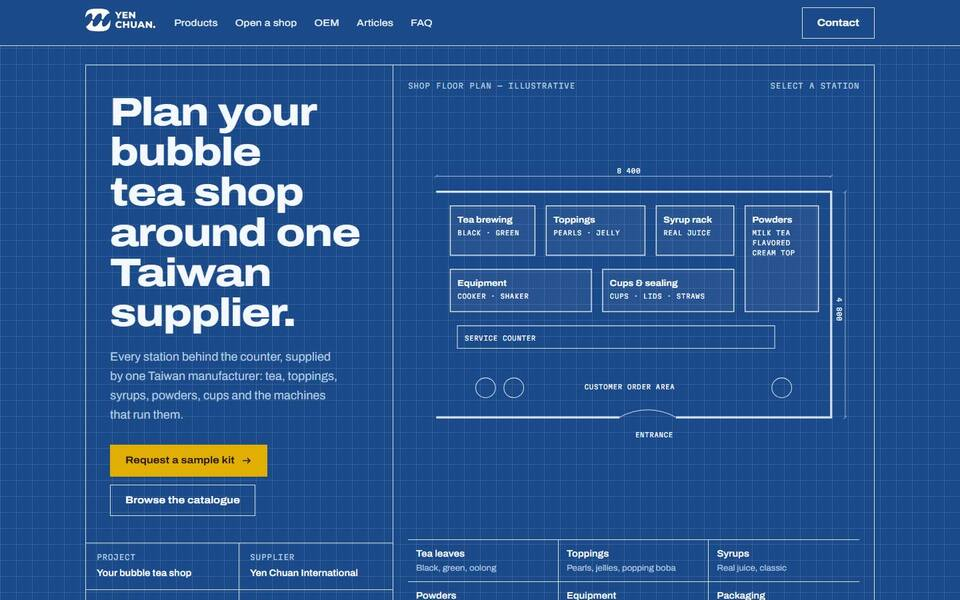

寫給：已營業的店老闆
B｜飲料菜單牆
不賣原料，賣「可以放上你菜單的飲料」。台灣手搖店燈箱菜單的樣子，每杯飲料都列出用到的圓川商品。與現行網站配色最接近。
- 試試看
- 點「甜度冰塊」那排按鈕篩選飲料

同一份真實內容（商品、食譜、聯絡方式皆取自現行網站），用三種不同風格，分別寫給三種最常見的買家。點縮圖即可開啟完整首頁，電腦與手機皆可瀏覽。
此為未來改版的參考提案，不是正式網站，也不影響現行網站。

不賣原料，賣「可以放上你菜單的飲料」。台灣手搖店燈箱菜單的樣子，每杯飲料都列出用到的圓川商品。與現行網站配色最接近。